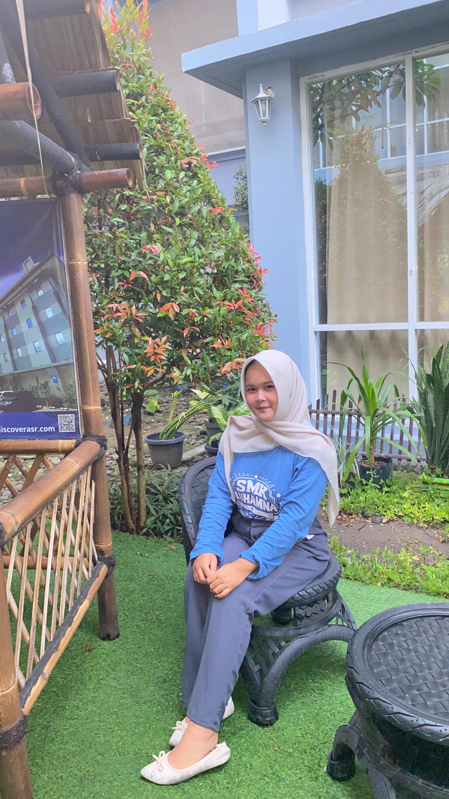
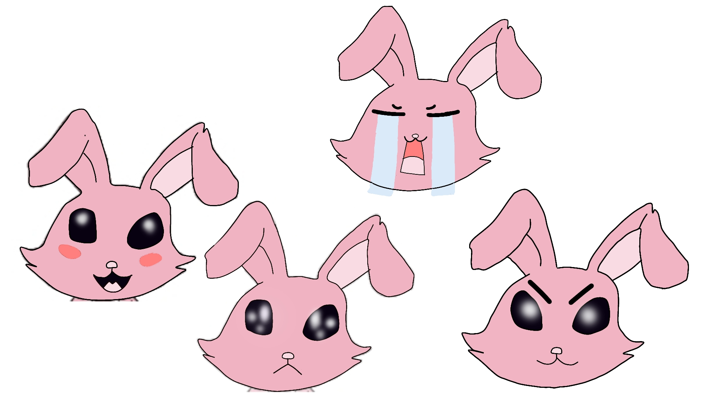
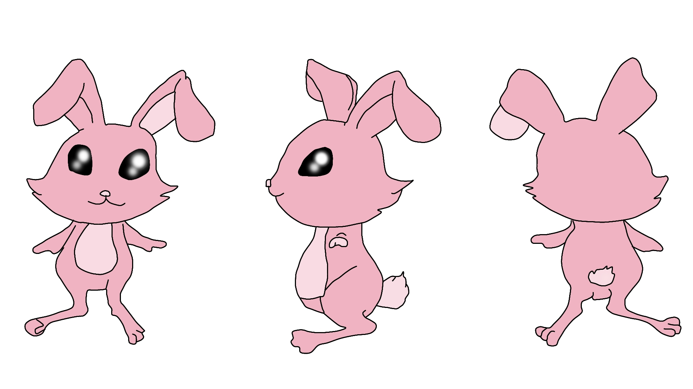
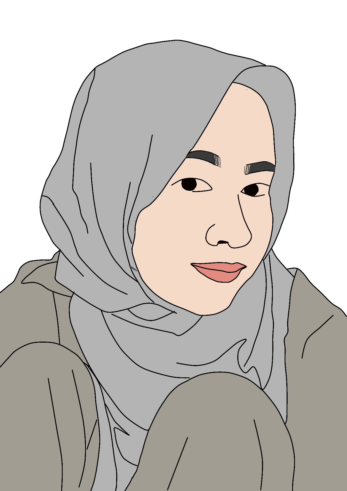
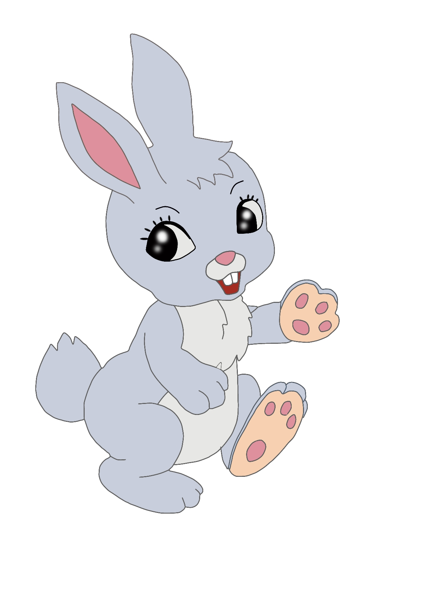
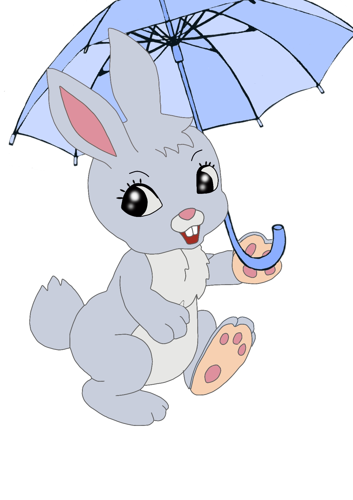

animasi
kenalin aku fina sekolah di smk muhamna, aku ngambil jurusan animasi karna ingin belajar banyak hal seperti menggambar karakter, membuat story board,serta dasar-dasar animasi lainnya
walaupun jurusanku berhubungan dengan gambar dan animasi, tapi aku punya keahlian lain yg cukup berbeda yaitu memasak. Sejak di rumah, aku sudah terbiasa membantu memasak. Aku suka mencoba resep baru, mulai dari masakan rumah sampai cemilan sederhana. Buatku, memasak itu hal yg sangat seru, walaupun ngga ada hubungannya sama animasi yang aku pelajari di sekolah.

Kelinci digambarkan memiliki berbagai ekspresi wajah, senang, sedih, marah, dan bingung, sehingga menunjukkan kemampuan karakter untuk mengekspresikan emosi dengan jelas. Bentuk tubuhnya sederhana, dengan telinga panjang yang lentur.

Karakter kelinci ini dibuat menggunakan aplikasi IbisPaint dengan garis tegas dan warna lembut. Karakter utama berupa kelinci imut dengan mata besar berkilau yang menjadi ciri khasnya.

perempuan berhijab dengan Warna-warna netral dan lembut digunakan untuk menampilkan kesan tenang dan sederhana. Garis wajah digambar halus dengan ekspresi natural, menunjukkan karakter yang kalem dan ramah.

karakter kelinci menggemaskan dengan pose ceria, digambar dengan ibis paint.

Selain itu, terdapat kelinci abu-abu yang memegang payung biru, memberikan kesan ceria dan lembut, seolah karakter sedang menikmati suasana hujan. Gerakan kaki yang terangkat menambah kesan hidup.
disiplin
komunikasi
adaptabilitas
kerjasama tim
kemampuan interpersonal
memasak
make up
mengelola usaha kecil
membuat konten
menulis cerita
contact me for furter information or discussion
Email:rahilfina14@gmail.com